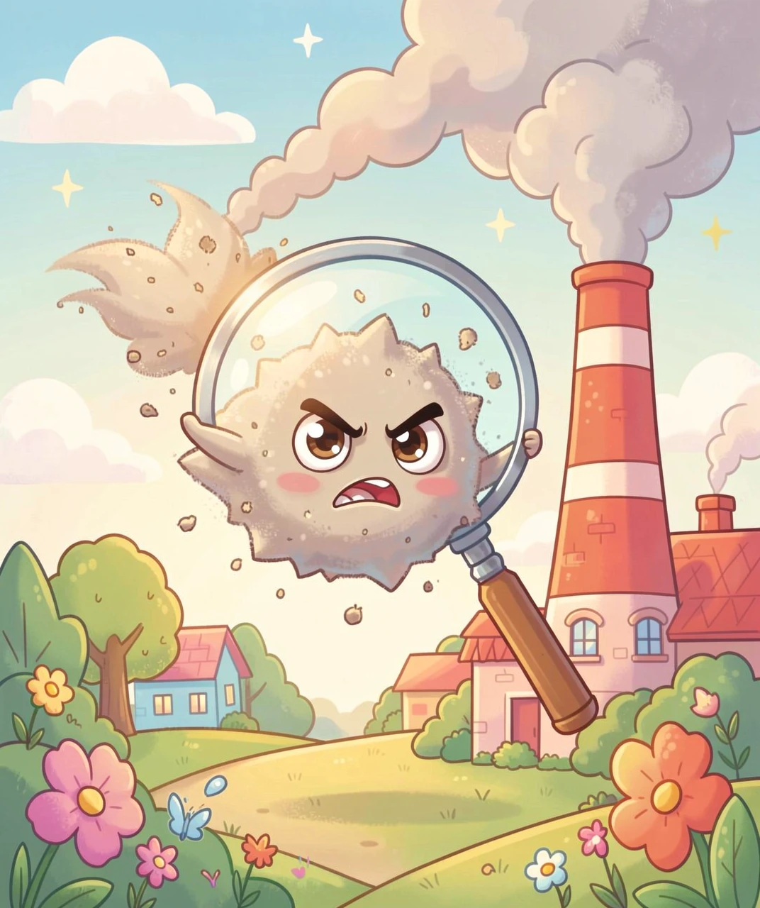
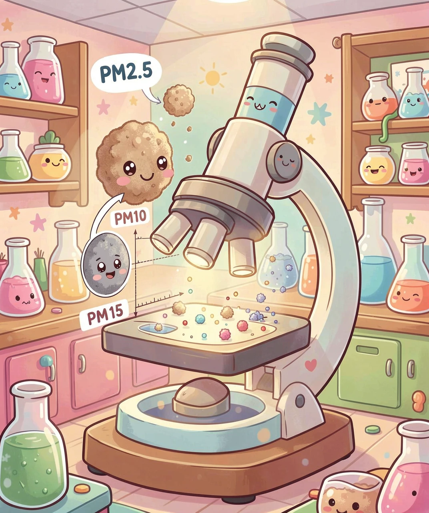
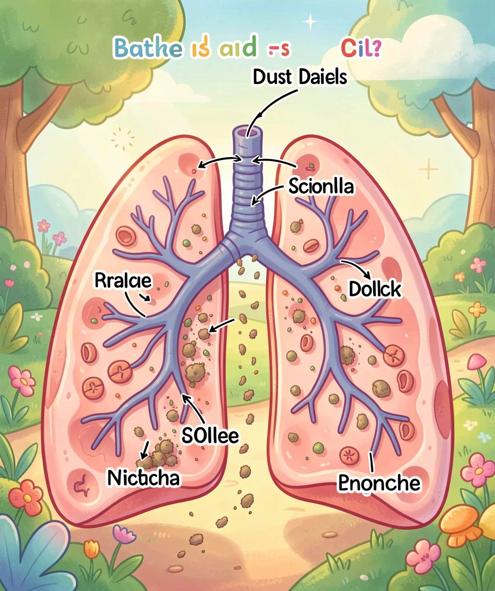
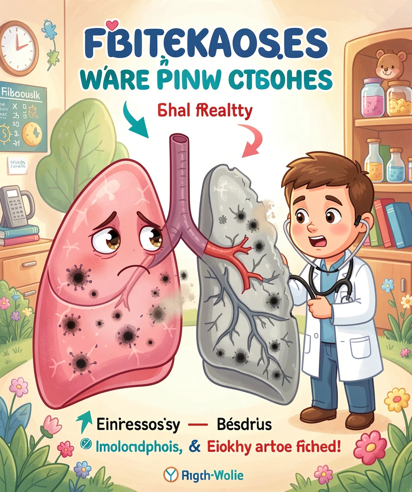
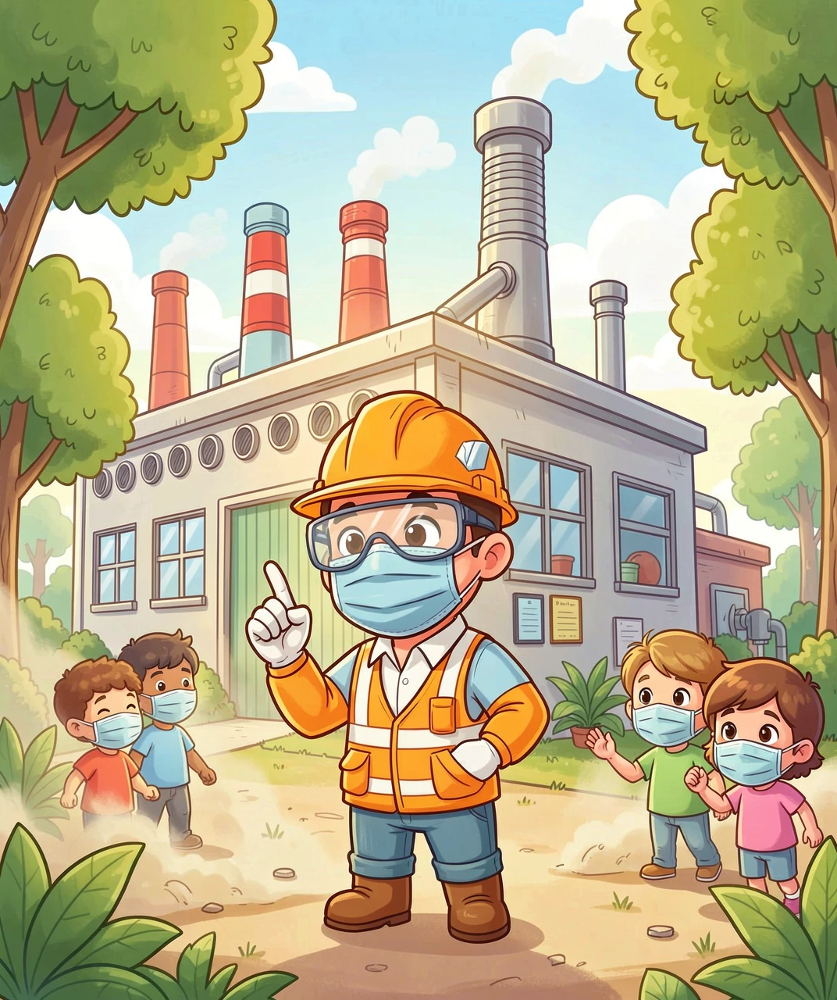

那些漂浮在空气中的小颗粒，如何悄悄伤害我们的肺？

你有没有注意过，阳光照进房间的时候，光柱里有很多很多小颗粒在飞来飞去？那些就是粉尘！它们小到肉眼几乎看不见，却无处不在——教室里、马路上、工厂旁，甚至你家的书架上都有它们的身影。
粉尘不是一种东西，而是一个「大家族」。有的成员个头比较大，比如花粉、灰尘、皮屑；有的成员特别特别小，小到只有头发丝的三十分之一，它们叫PM2.5（直径小于2.5微米的颗粒物）。个头越小的粉尘，越能深入我们的身体，造成的伤害也越大。

粉尘按来源可以分为三大「门派」：
🏭 工业粉尘：矿山开采、隧道施工、金属打磨、水泥制造……这些工厂和工地会产生大量粉尘。工人们每天和粉尘打交道，如果不好好保护，粉尘就会悄悄进入他们的肺。
🌾 农业粉尘：收割庄稼时飞扬的谷壳、稻草粉末，还有养殖场的饲料粉尘。农民伯伯秋收时扬起的那些「金色粉末」，看起来很美，其实藏着风险。
🏙️ 城市粉尘：汽车尾气、建筑工地的扬尘、道路上的灰尘。即使你住在城市里，每天也会吸进不少粉尘。

当你吸一口气，空气从鼻子进去，经过喉咙、气管、支气管，最后到达肺泡。肺泡就像一串串小葡萄，是肺里交换氧气的地方。粉尘也跟着空气一路深入，但身体的「防御系统」会努力拦住它们：
🛡️ 第一关：鼻毛和鼻涕——大颗粒会被鼻毛挡住，黏在鼻涕里。你挖鼻屎的时候，那些灰灰的东西就是被拦住的粉尘！
🛡️ 第二关：气管的「小扫把」——气管和支气管壁上有无数根纤毛，它们像小扫把一样不停往上扫，把黏住粉尘的黏液推到喉咙，你就把它咳出来或咽下去了。
🛡️ 第三关：肺泡的「吞噬兵」——如果有特别小的粉尘（比如PM2.5）闯到了肺泡，一种叫巨噬细胞的免疫细胞会冲上去把它们「吃掉」。
但是！如果粉尘太多太多，这些防御系统就会累垮。纤毛被压坏了不扫了，巨噬细胞吃太多「撑死」了，粉尘就开始在肺里安家落户。

当粉尘长期在肺里堆积，肺就会「生病」，这就是尘肺病。它是世界上最古老的职业病之一，至今仍在伤害着无数工人。
尘肺病是这样发生的：粉尘进入肺泡后，巨噬细胞吞掉粉尘，但消化不了，反而自己死掉了。死掉的细胞释放出有害物质，刺激肺组织产生纤维化——就是正常的、软软的肺组织变成了硬硬的疤痕组织。
打个比方：健康的肺像一块软软的海绵，可以轻松地膨胀收缩；而尘肺病人的肺像一块被胶水泡过的海绵，又硬又脆，怎么捏都捏不动。这就导致他们呼吸困难，稍微动一动就喘得厉害。
尘肺病有不同的类型，取决于吸入什么粉尘：
⛏️ 矽肺：吸入石英粉尘（采矿、石匠）——最常见也最严重
🪨 煤工尘肺：吸入煤粉（煤矿工人）——「黑肺病」
⚙️ 电焊工尘肺：吸入金属烟尘（电焊工人）
🏗️ 石棉肺：吸入石棉纤维（上期讲过的石棉杀手！）

尘肺病目前无法治愈——一旦肺组织纤维化了，就再也变不回去了。所以，最重要的就是预防！
👷 对于工人和工厂：
• 戴专业的防尘口罩（普通棉口罩挡不住PM2.5！要戴N95或更高标准的）
• 工厂安装通风除尘设备，把粉尘抽走
• 定期给工人做体检，早发现早干预
• 用湿式作业（喷水让粉尘落地），减少扬尘
• 粉尘多的区域密闭，不让粉尘跑到外面
🏠 对于我们在家的你：
• 雾霾天减少出门，出门戴好口罩
• 家里定期打扫，减少积灰
• 关注空气质量指数（AQI），空气差时关窗开空气净化器
• 多吃蔬菜水果，锻炼身体，让肺更强壮
记住：肺是我们身体的「氧气工厂」，一辈子只有这一对。保护好了，它能为你工作100年；保护不好，它可能提前「罢工」。每一个工人的肺都值得被守护，每一次正确的防护都在拯救一条生命！